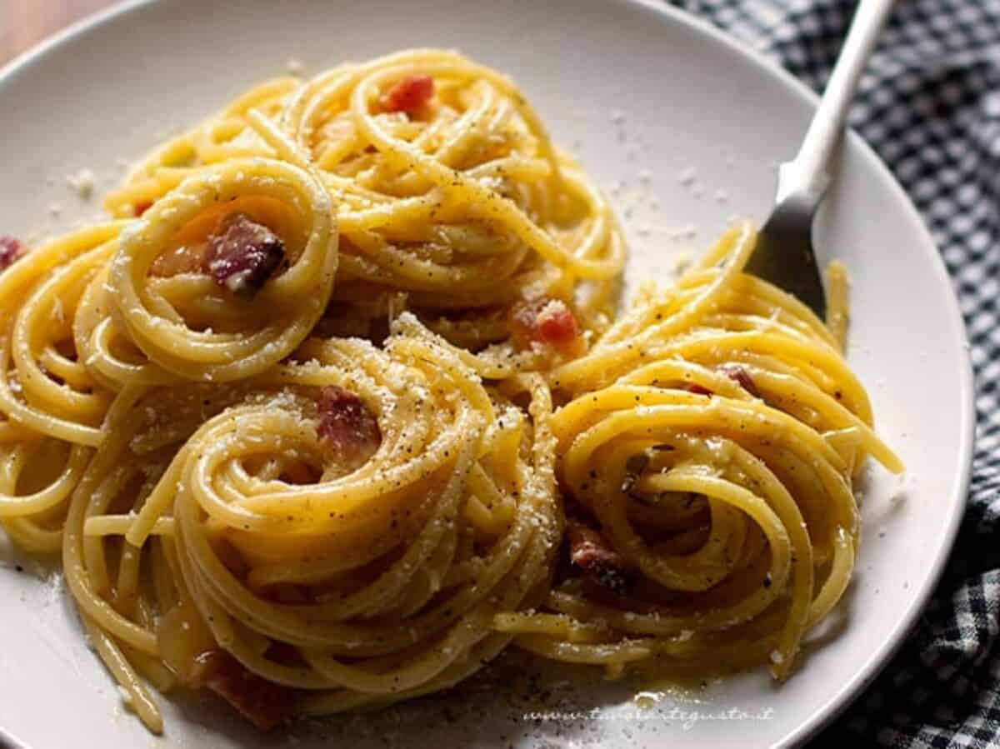

Spaghetti Carbonara

Description
Serves 4
This is how Marco Guercini taught me to make carbonara. It's the very legit and real roman way, and not the
americanised cream version.
Ingredients
- 4 egg yolks
- black pepper
- 200g pecorino romano
- 150g fresh pasta per person (see my fresh pasta recipe)
- 100-150g guancale or bacon
Steps
- Set water to boil for the pasta. Salt the water VERY well.
- Chop up and fry the guancale/bacon in a hot pan. Drain the rendered fat and pieces into a separate bowl. Set
aside.
- Beat the egg yolk with the finely grated pecorino and black pepper
- Once the water is boiling, add and cook the fresh pasta for 1-2 minutes.
- Once it's ready, remove the pasta with tongs and add to the pan you cooked the guancale in.
- Add in half a ladle of pasta water and, after letting it cool very slightly, throw in your egg mixture
- Whisk and toss and turn like crazy to get an emulsion. The residual heat of the pasta should cook the egg
without scrambling it
- Add in the guancale fat and stir once more.
- Plate, top with the guancale, some more pepper, and some more pecorino.
- Enjoy!